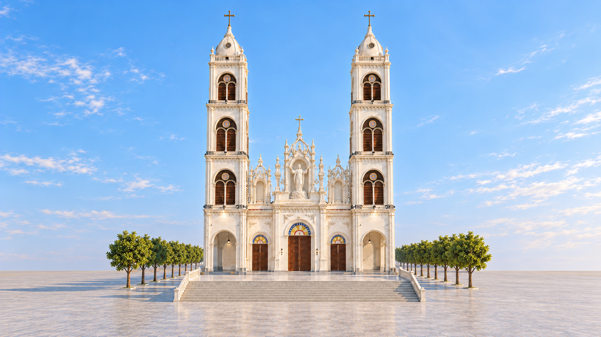
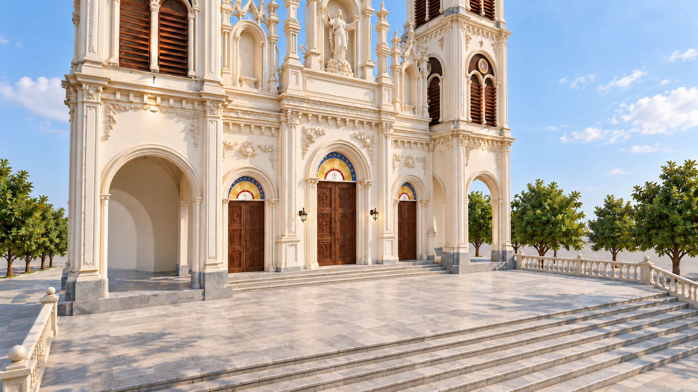
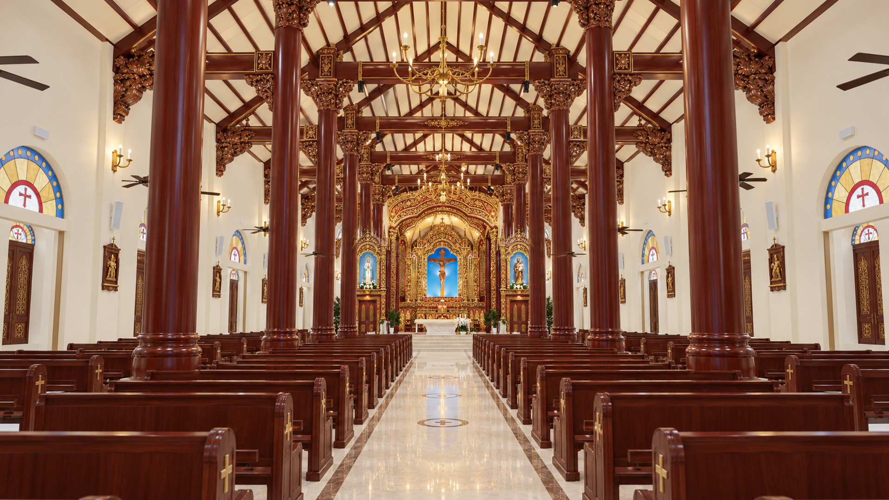
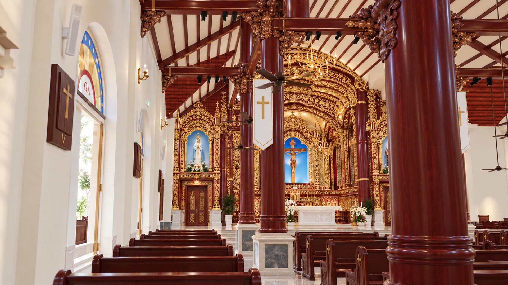
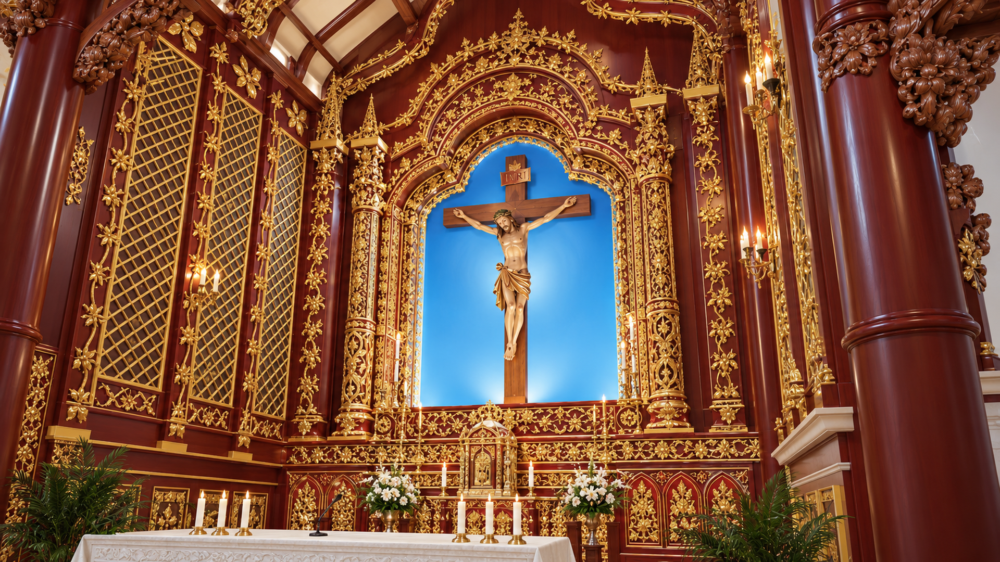
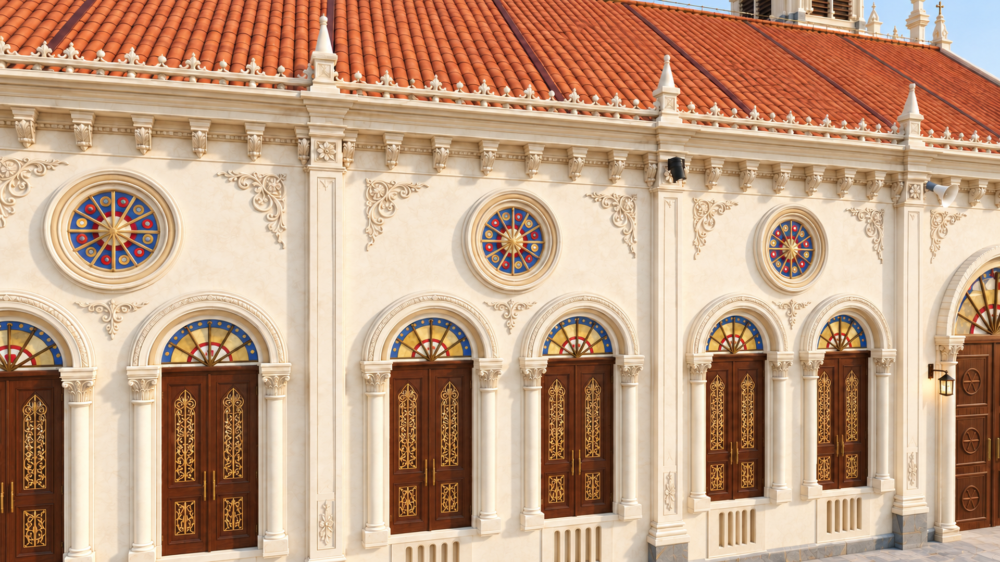
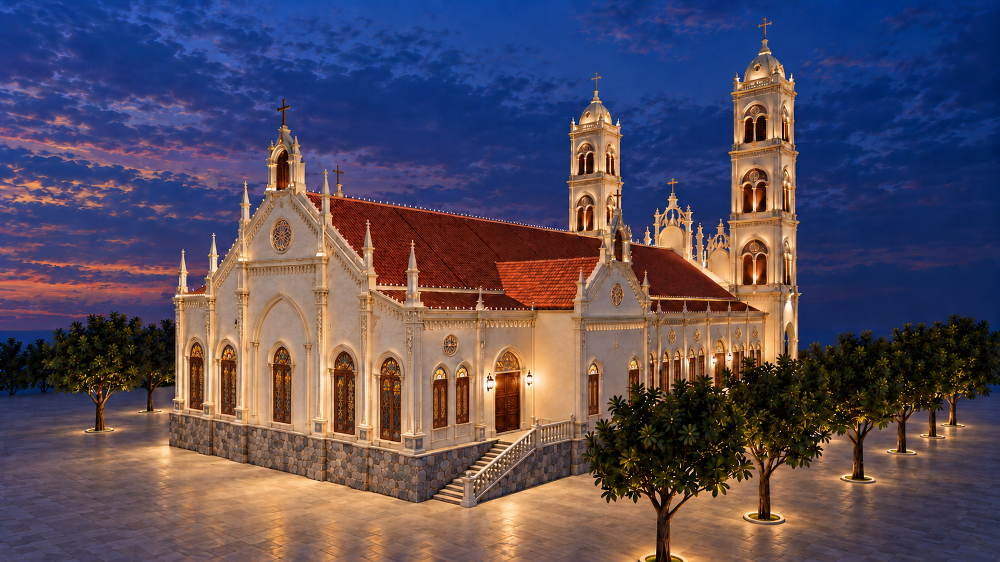
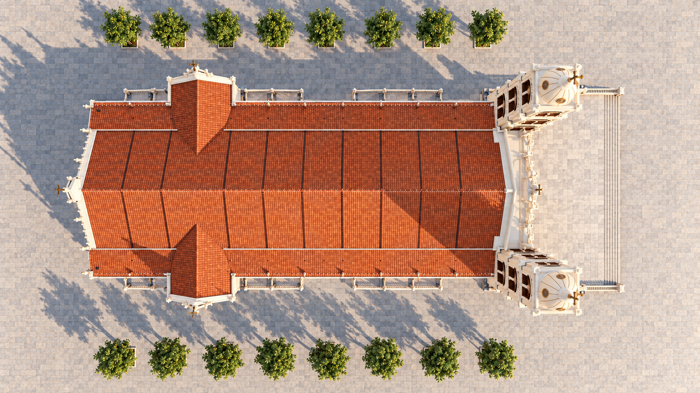

Front elevation · daylight
Twin towers and the Assumption of the Blessed Virgin Mary in the central facade niche.
16 generated architectural views · 7 October 2026. Based on recorded model captures and approved art concepts.
Full HD files are 1920 × 1080 resampled copies; native originals are preserved. The latest side-window details use the owner-preferred carved timber and gold panels on both faces. Proposed longitudinal nave beams are illustrated in the overhead cutaway. These visual concepts do not establish dimensions, joinery or installed lighting performance.

Twin towers and the Assumption of the Blessed Virgin Mary in the central facade niche.

Elevated oblique view showing the facade, Assumption statue, long side and terracotta roofs.

Closer oblique view of the three timber entrances, stone stage and Marian niche.

Opposite oblique view with warm facade accents and the Assumption statue at blue hour.

Long central aisle, timber columns and carved beam heads, with the approved sanctuary concept at the far end.

Central Crucifix in its blue recess, Our Lady and Saint Joseph with Child, red lacquer and gilded carving.

Eye-level side view combining the modeled aisle arrangement with the approved sanctuary and column-head art.

Oblique close view of the Crucifix niche, layered gilded relief, lacquered chamber and pale stone altar.

Decorative study of carved haunches, column head, connected beams and upper rail. Concealed joinery is not specified.

Carved timber side doors, stained-glass fanlight, ivory arch mouldings, wall relief and stone landing. Side shutters use the owner-preferred solid carved timber and gilded panels from the interior view.

Interior side-door arch, stained glass, devotional panels, wall sconces and nearby lacquered columns.

Close view of the paired timber shutters, coloured fanlights, circular rose windows, pilasters and ornamental cornice. Side shutters use the owner-preferred solid carved timber and gilded panels from the interior view.

Straight view of the sanctuary-end exterior, five rear windows, central gable and continuous stone base.

Oblique rear view showing the sanctuary-end wall, projecting wing, side entrances and distant front towers. Side shutters use the owner-preferred solid carved timber and gilded panels from the interior view.

Overhead roof view showing both front towers, projecting wings, roof intersections, side stairs and two tree rows.

Roof-hidden overhead concept showing the nave, four pew blocks, two central column rows, sanctuary and side wings. Two B03 longitudinal nave-row beams are shown as proposed connections from the structural art reference.